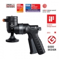

GH-100将球形云台的高精密度与符合人体工程学的控制相结合，方便用户快速定位相机或观景镜，而且功能强大。该款精心设计的球形云台采用GPR系统（手柄定位释放），具有行业领先的可360度旋转的手柄式握把，使您能够轻松解锁、定位和锁定摄影器材。GH-100可单手操作，使用舒适，方便用户用另一只手进行镜头调焦。按下手柄可进行360°的水平旋转 动 -32 - +90°横向倾斜移动以及-8 - +90°前后倾斜移动。只须松开手柄，即可快速定位。